Kỹ nghệ hệ thống Trí tuệ nhân tạo
Bài 2a: Ca sử dụng &
Ngôn ngữ mô hình hóa thống nhất (UML)
Trường ĐH Công nghệ – Đại học Quốc gia Hà Nội
Nội dung
- Giới thiệu
- Ca sử dụng (Use Cases)
- UML là gì?
- Biểu đồ lớp (Class Diagram)
- Các biểu đồ khác
- Ma trận theo dõi (Traceability Matrix)
Lộ trình bài học
0.
Giới thiệu
Yêu cầu (Requirements)

Robert Martin, Agile Software Development. Principles, Patterns, and Practices
Yêu cầu (Requirements)
Robert Martin, Agile Software Development. Principles, Patterns, and Practices
Yêu cầu (Requirements)
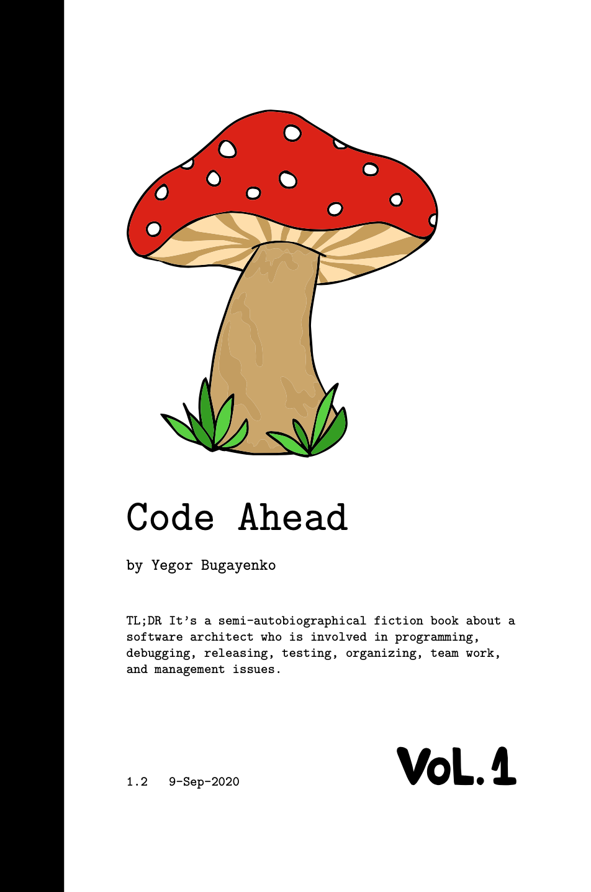
Yegor Bugayenko, Code Ahead
1.
Ca sử dụng
(Use Cases)
"Ba chàng ngự lâm" của UML
"The Three Amigos" — người sáng lập UML tại Rational Software
Ca sử dụng (Use Cases)
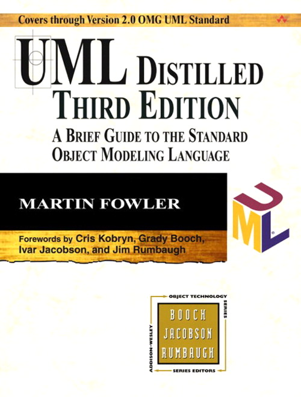
Martin Fowler, UML Distilled
Ví dụ về ca sử dụng (Who does What)
Luồng cơ bản
- Người dùng nhập URL vào ô HTML.
- Hệ thống tạo hình ảnh PNG của mã QR.
- Người dùng tải hình ảnh qua HTTP.
Mở rộng
- Người dùng nhập URL hỏng.
- Hệ thống hiển thị hộp thoại thông báo lỗi.
- Người dùng xác nhận.
- Người dùng hủy tải về.
- Hệ thống dừng gửi dữ liệu qua HTTP.
Biểu đồ ca sử dụng (Use Case Diagram)
2.
UML là gì?
UML (Unified Modeling Language)
- Được chuẩn hóa bởi Object Management Group (OMG)
- Là ngôn ngữ chung giữa nhà phân tích, kiến trúc sư, lập trình viên
Đối tượng sử dụng UML
ISO/IEC 19501:2005 — Unified Modeling Language (UML) Version 1.4.2
→ Tiêu chuẩn UML dành cho chuyên gia — bài học này chỉ giới thiệu các khái niệm cơ bản và thường dùng nhất.
3.
Biểu đồ lớp
(Class Diagram)
Lớp (Classes)
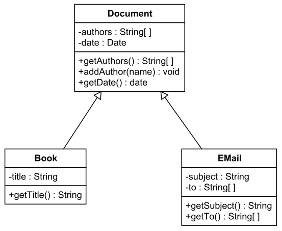
Một lớp gồm tên, thuộc tính (attributes) và phương thức (operations).
Tổng quát hóa (Generalization)
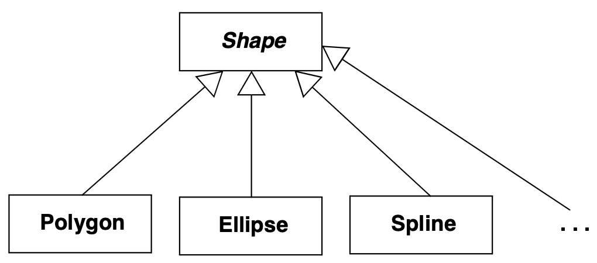
Quan hệ "is-a" — lớp con kế thừa thuộc tính và hành vi của lớp cha.
Hợp thành (Composition)
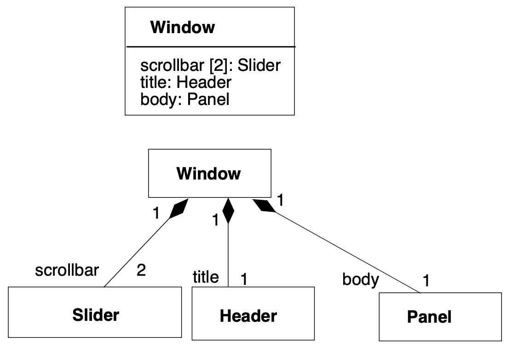
Quan hệ sở hữu chặt — phần (part) không tồn tại độc lập nếu không có toàn thể (whole).
Tập hợp (Aggregation)
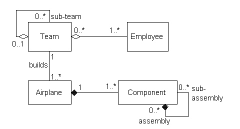
Quan hệ sở hữu lỏng — phần (part) vẫn tồn tại độc lập được với toàn thể (whole).
Liên kết (Association)
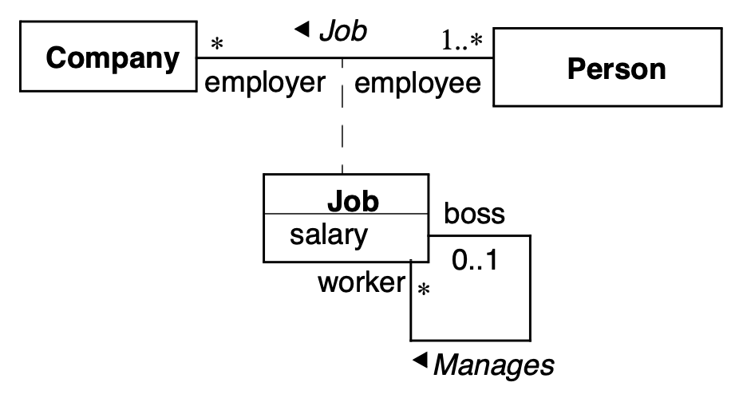
Quan hệ cấu trúc chung giữa hai lớp — không hàm ý sở hữu.
Phụ thuộc (Dependency)
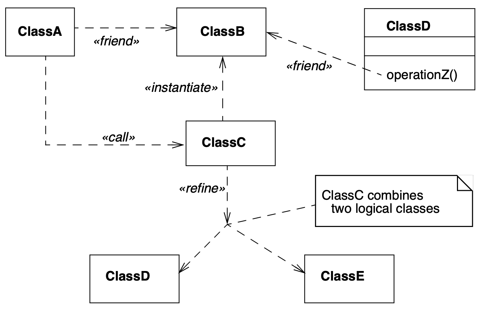
Quan hệ tạm thời — một lớp sử dụng lớp khác (ví dụ: tham số, biến cục bộ), thay đổi ở lớp kia có thể ảnh hưởng.
4.
Các biểu đồ khác
Biểu đồ thành phần (Component Diagram)
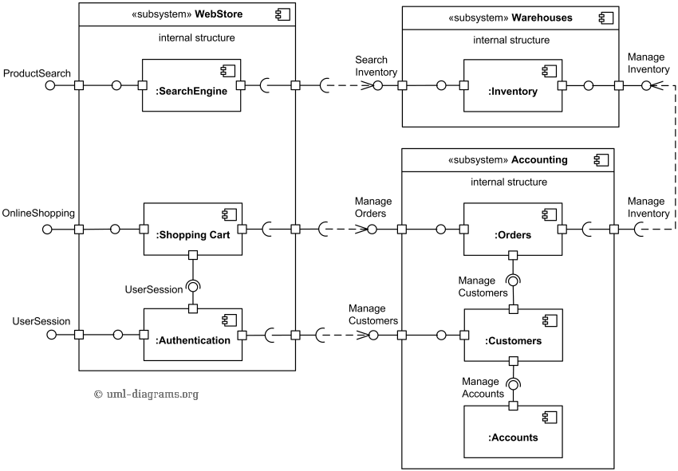
Mô tả các thành phần phần mềm và giao diện kết nối giữa chúng.
Biểu đồ triển khai (Deployment Diagram)
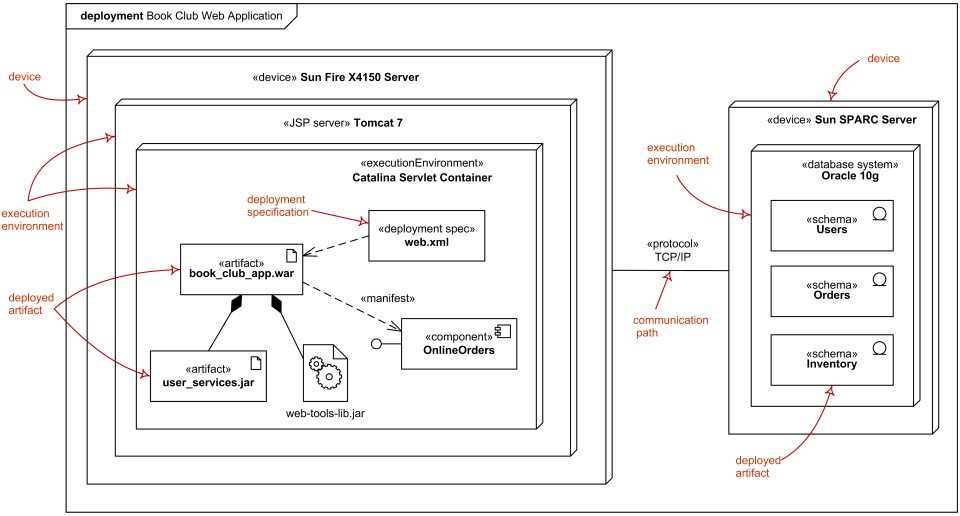
Mô tả cách các thành phần phần mềm được triển khai lên phần cứng/node vật lý.
Biểu đồ hoạt động (Activity Diagram)
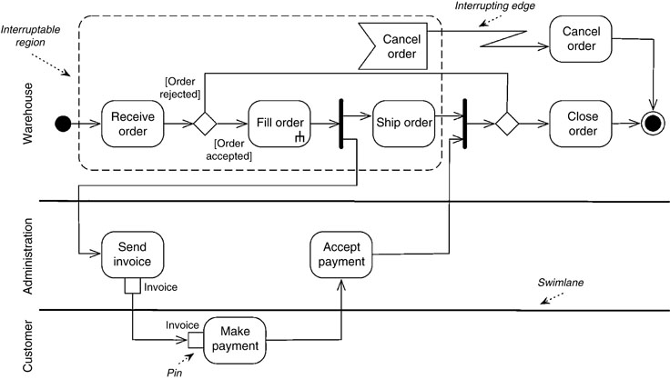
Mô tả luồng công việc — trình tự các hành động và quyết định.
Biểu đồ tuần tự (Sequence Diagram)
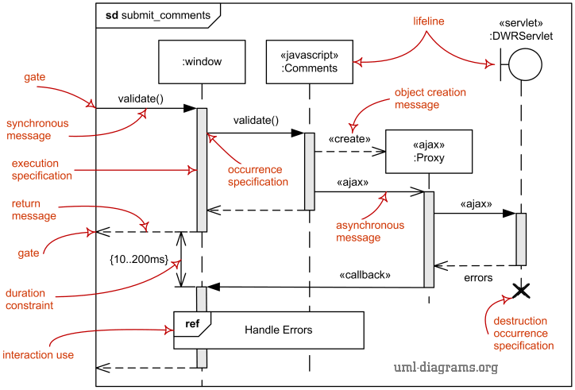
Mô tả tương tác giữa các đối tượng theo trình tự thời gian.
5.
Ma trận theo dõi
(Traceability Matrix)
Ma trận theo dõi
Ca sử dụng, yêu cầu phi chức năng, ca kiểm thử, lớp, gói, máy chủ, container, thành phần, node, v.v.

Tổng kết
Thực hành: vẽ cho dự án của bạn — một biểu đồ lớp, một biểu đồ component, một biểu đồ deployment, và ba biểu đồ sequence.